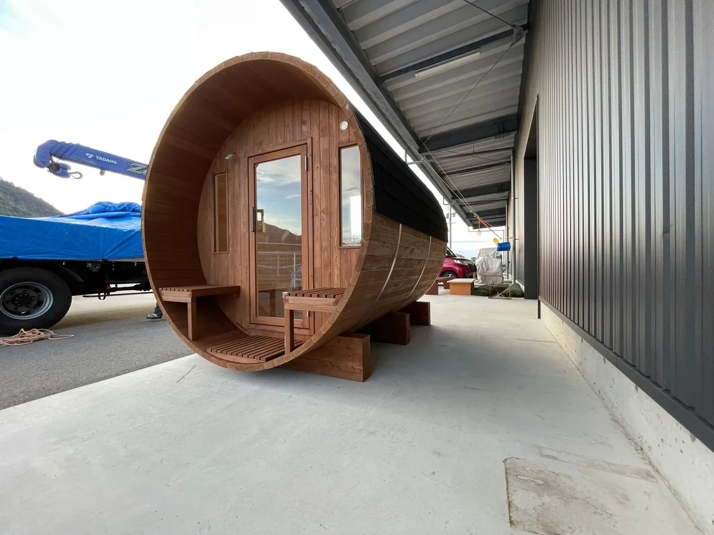
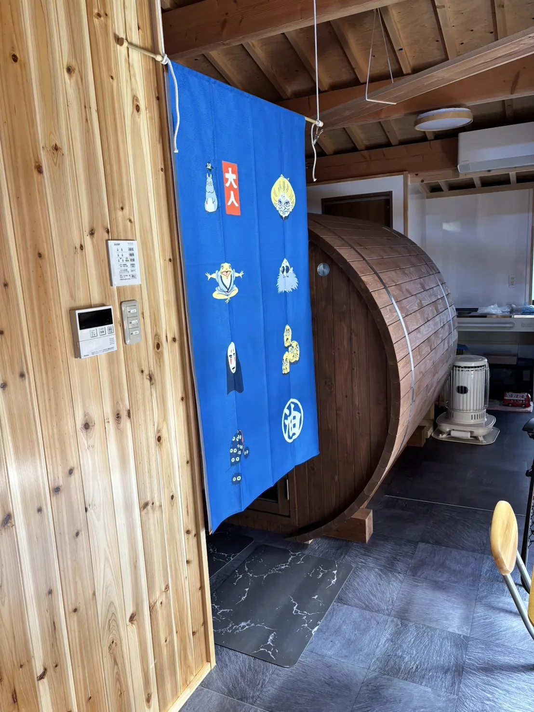

Rink STORIES
導入事例
宿のプールサイドから自宅の庭まで。
地図と写真で、Rinkのある場所をご紹介します。
- 年間150台の販売実績
- 全国の配送・設置に対応
INSTALLATION MAP
地図で探す
庭や別荘、宿泊施設へ。全国に広がる、Rinkのある場所。
地域で絞り込む
- 導入記事を読む ↗
- 導入記事を読む ↗
- 導入記事を読む ↗
- 導入記事を読む ↗
- 導入記事を読む ↗
- 導入記事を読む ↗
- 導入記事を読む ↗
- 導入記事を読む ↗
- 導入記事を読む ↗
- 導入記事を読む ↗
- 導入記事を読む ↗
- 導入記事を読む ↗
- 導入記事を読む ↗
- 導入記事を読む ↗
- 導入記事を読む ↗
- 導入記事を読む ↗
- 導入記事を読む ↗
- 導入記事を読む ↗
- 導入記事を読む ↗
該当する実績がありません。
エリアやキーワードを変えてお試しください。
Rinkのある地域施設の位置地域の目安
点は市区町村の代表位置です。個別の設置場所を示すものではありません。
ご利用・見学の条件や営業状況は各施設の公式案内をご確認ください。モデルの絞り込みは、導入記事で型式を確認した施設が対象です。写真付きの施設は公開施設のみ掲載しています。掲載件数は導入総数とは異なります。
PHOTO STORIES
Rinkのある風景
宿やキャンプ場、自宅や別荘。使い方や設置環境を、写真と記事でご紹介します。

「自分でもやりたい」サウナ好き社長がこだわった、純国産ヒノキが香る極上のプライベート空間
宮崎県 / 施設・事業
元々サウナが好きで、温泉のサウナからプライベートサウナまで、さまざまな施設に通っていました。次第に「自分でもやりたいな」という思いが強くなったんです。 宮崎県で合同会社健美を経営す…

「稼働率90％超え、宿泊単価も向上」貸別荘が実感したバレルサウナの投資価値
兵庫県 / 施設・事業
「90％、95％は稼働しているからね。サウナがある分、宿泊代も高く設定できています」 そう語ってくださったのは、貸別荘「Soothe Forest」を運営するM様です。 プライベー…

テントサウナから国産ヒノキのバレルサウナへ変更した理由
千葉県 / ご自宅・別荘
「前からプライベートサウナが欲しいと思っていて。まとまったお金が入ったタイミングで、思い切ってバレルサウナに決めました」 そう語ってくださったのは、千葉県のご自宅のお庭にバレルサウ…
海を望む絶景サウナ。純国産ヒノキとパノラマ窓が彩る、旅館の新たな滞在価値
佐賀県 / 施設・事業
海を望むロケーションに設置されたバレルサウナ 「サウナ良かったよ」「海が見えるサウナ良かったよ」と、お客様から嬉しいお声をいただいています。 そう語ってくださったのは、佐賀県の大政…

「遊び心がある施設になった」瀬戸内リゾートホテルが、バレルサウナ導入で見出した新たな価値。
施設・事業
「ちょっとした遊び心がある施設になったのかなと。」 穏やかな口調でそう語るのは、瀬戸内海を一望するリゾートホテルのご担当者、鎌田様。 青い空と海に溶け込むように佇む、2台の国産ヒノ…

オフグリッドの理想郷へ。森に佇む国産ヒノキサウナ。
千葉県 / ご自宅・別荘
「本当。気持ちいいんですよ。」 柔らかな口調でそう語るのは、千葉県の別荘にバレルサウナを導入されたS様。 電気も水道も引かないオフグリッドの森で、国産ヒノキの香りに包まれ、薪ストー…

Rink SAUNAで叶える。鳥取県岩美町の海辺で自分専用サウナが誕生
鳥取県 / 施設・事業
鳥取県岩美郡岩美町。大自然と日本海に囲まれたこの美しい町の一角、会社倉庫裏の駐車スペースに、国産ヒノキ製のバレルサウナ「Rink SAUNA」が導入されました。 サウナ好きのオーナ…

自宅サウナで実現する癒しの庭リトリート
群馬県 / ご自宅・別荘
群馬県太田市の個人邸。緑が揺れる庭に、自宅サウナとしてRink SAUNAの国産ヒノキ製のバレルサウナが導入されました。 家庭用としてはやや広めな、ゆったり4名まで利用可能なサウナ…
広い庭に憧れのプライベートサウナを導入、RinkSAUNAで「優雅なととのい時間」を満喫
宮崎県 / ご自宅・別荘
宮崎県宮崎市の個人宅に、プライベートサウナとしてRink SAUNAが導入されました。 2年前に新築したご自宅の庭に、2〜4名まで利用可能な国産ヒノキ製バレルサウナと国産ガスヒータ…
北海道の山奥に癒しの空間を宿泊所「ぶんちゃんの里」に国産バレルサウナRink SAUNAが登場！
北海道 / 施設・事業
北海道・浜頓別町市街地から13kmほど離れた、山あいに佇む農泊「ぶんちゃんの里 」。 かつて酪農を営んでいたこの場所に、新たな命を吹き込むプロジェクトとして、国産ヒノキ製バレルサウ…

個人宅に国産バレルサウナ Rink SAUNAを設置、セルフビルドで叶えた理想のサウナライフ
岡山県 / ご自宅・別荘
岡山県敷倉市にある個人宅のお庭に、2〜4名で利用できる高品質な国産ヒノキ製バレルサウナ「Rink SAUNA」が設置されました。お客様は、より本格的なフィンランドサウナを自宅で楽し…

寒冷地に耐える高い保温性の国産バレルサウナで、社員を労わる保養所へ
山梨県 / 施設・事業
山梨県鳴沢村に位置するとある企業様の保養所に、純国産ヒノキ製のRink SAUNAが導入されました。四季折々の自然に囲まれた静寂な環境で、都会の喧騒を離れ、心身をリフレッシュできる…
該当する記事が見つかりませんでした。
キーワードを短くするか、分類・エリアを変更してお試しください。


Rink SAUNA ご相談窓口
あなたの場所では、どんな楽しみを。
施設にも、ご自宅にも。実例を参考にしながら、設置場所に合う一台を一緒に考えます。